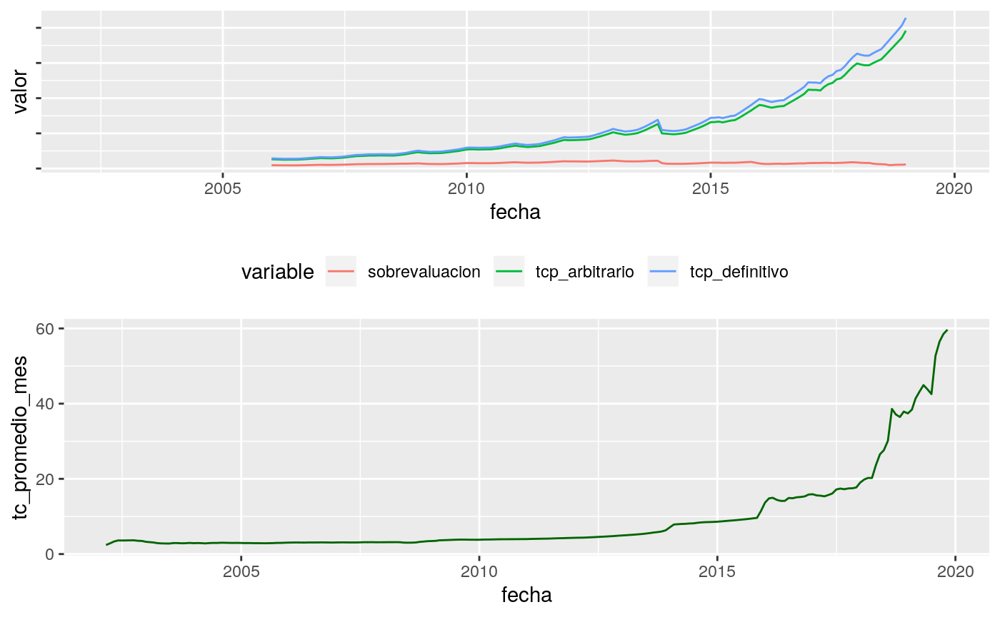

TCP.Rmdlibrary(readr)
library(readxl)
library(tidyverse)
library(stringr)
library(lubridate)
library(imputeTS)Indice de producción industrial de EEUU
Total de obreros ocupados del sector industrial.
Nota: todos los números indices (cuyas variables se identifican con el prefijo “i_”) se construirán con año base enero 2017.
productividad_us <- employ_us %>%
left_join(manuf_us, by = "fecha") %>%
mutate(i_productividad_us = i_manuf_us/i_empleo_us) %>%
select(fecha, i_productividad_us) %>%
filter(fecha >= "1972-01-01")
productividad_us <- productividad_us %>%
#agrego todos los meses
complete(fecha = seq.Date(min(fecha), max(fecha), by="month")) %>%
#imputo
mutate(i_productividad_us = na_interpolation(i_productividad_us,option = 'linear'))## Parsed with column specification:
## cols(
## `Series ID` = col_character(),
## Year = col_double(),
## Period = col_character(),
## Label = col_character(),
## Value = col_double()
## )Valor agregado bruto sectorial a precios de productor en pesos constantes de 1993
## Parsed with column specification:
## cols(
## .default = col_double(),
## indice_tiempo = col_date(format = "")
## )## See spec(...) for full column specifications.empleo_nacional_serie_trimestral <- read_excel("../data/empleo_arg.xlsx",
sheet = "C2.2", skip = 2, n_max = 93) %>%
rename( periodo = "Período",
empleo_arg = "Industria") %>%
mutate(cuatri = as.double(str_sub(periodo, 1, 1)),
anio = as.double(str_sub(periodo, 9, 13)),
mes = case_when(cuatri == 1 ~ 1,
cuatri == 2 ~ 4,
cuatri == 3 ~ 7,
cuatri == 4 ~ 12),
fecha = as_date(parse_date_time(paste(anio, mes, sep = "-"), orders = "ym"))) %>%
select(fecha, empleo_arg)
empleo_arg <- empleo_nacional_serie_trimestral %>%
mutate(i_empleo_arg = generar_indice(serie = empleo_arg,
fecha = fecha,
fecha_base = "2017-01-01")) %>%
select(-empleo_arg) #buscar otra variable empleo, con mayor actualizacion (EPH por ej)
empleo_arg## # A tibble: 93 x 2
## fecha i_empleo_arg
## <date> <dbl>
## 1 1996-01-01 0.709
## 2 1996-04-01 0.716
## 3 1996-07-01 0.725
## 4 1996-12-01 0.732
## 5 1997-01-01 0.740
## 6 1997-04-01 0.751
## 7 1997-07-01 0.755
## 8 1997-12-01 0.762
## 9 1998-01-01 0.765
## 10 1998-04-01 0.769
## # … with 83 more rowsproductividad_arg <- empleo_arg %>%
left_join(manuf_arg, by = "fecha") %>%
mutate(i_productividad_arg = i_manuf_arg/i_empleo_arg) %>%
filter(fecha >= "2004-01-01") %>%
select(fecha, i_productividad_arg)
#agrego todos los meses
productividad_arg <- productividad_arg %>%
complete(fecha = seq.Date(min(fecha), max(fecha), by="month")) %>%
mutate(i_productividad_arg = na_interpolation(i_productividad_arg,option = 'linear')) #Revisar si se puede ajustar con el IPI industrial del INDEC o FIEL
productividad_arg## # A tibble: 181 x 2
## fecha i_productividad_arg
## <date> <dbl>
## 1 2004-01-01 1.17
## 2 2004-02-01 1.18
## 3 2004-03-01 1.19
## 4 2004-04-01 1.21
## 5 2004-05-01 1.20
## 6 2004-06-01 1.20
## 7 2004-07-01 1.20
## 8 2004-08-01 1.19
## 9 2004-09-01 1.17
## 10 2004-10-01 1.16
## # … with 171 more rowsipc_arg <- read_excel("../data/ipc_arg.xlsx",
col_types = c("date", "numeric", "numeric")) %>%
select(-ipc9_ene06) %>%
mutate(fecha = as.Date(fecha)) %>%
rename(i_ipc9 = ipc9_17) #Revisar si se puede construir el ipc con las bases crudas tc_dia_bcra <- read_excel("../data/com3500.xls",
skip = 2) %>%
select(fecha = Fecha,
tc = "Tipo de Cambio de Referencia - en Pesos - por Dólar")## New names:
## * `` -> ...3tc_mensual <- tc_dia_bcra %>%
group_by(fecha=floor_date(fecha, "month")) %>%
summarise(tc_promedio_mes = mean(tc)) %>%
mutate(fecha=date(fecha)) #armar una nueva variable con TC a fin de mes
#promedios 59-72
promedios_59_72 <- read_csv("../data/promedios_59_72.txt") %>% spread(variable,valor)## Parsed with column specification:
## cols(
## variable = col_character(),
## valor = col_double()
## )tcp <- tc_mensual %>%
left_join(productividad_us, by = "fecha") %>%
left_join(ipc_us, by = "fecha") %>%
left_join(productividad_arg, by = "fecha") %>%
left_join(ipc_arg, by = "fecha") %>%
mutate(ipc_arg_b = i_ipc9/promedios_59_72$ipc_prom,
ipc_us_b = i_ipc_us / promedios_59_72$cpi_prom,
ipt_arg_b = i_productividad_arg / promedios_59_72$ipt_arg_prom,
ipt_us_b = i_productividad_us / promedios_59_72$ipt_eeuu_prom,
tcp_arbitrario = promedios_59_72$tcc_prom * ((ipt_us_b / ipt_arg_b) * (ipc_arg_b / ipc_us_b)),
sobrevaluacion = (tcp_arbitrario / tc_promedio_mes) / promedios_59_72$tcp_arb_tcc_prom,
tcp_definitivo = sobrevaluacion * tc_promedio_mes)
tcp ## # A tibble: 213 x 13
## fecha tc_promedio_mes i_productividad… i_ipc_us i_productividad…
## <date> <dbl> <dbl> <dbl> <dbl>
## 1 2002-03-01 2.40 0.719 0.732 NA
## 2 2002-04-01 2.86 0.726 0.735 NA
## 3 2002-05-01 3.33 0.730 0.736 NA
## 4 2002-06-01 3.62 0.734 0.737 NA
## 5 2002-07-01 3.61 0.738 0.738 NA
## 6 2002-08-01 3.62 0.741 0.740 NA
## 7 2002-09-01 3.64 0.744 0.742 NA
## 8 2002-10-01 3.65 0.747 0.743 NA
## 9 2002-11-01 3.53 0.752 0.745 NA
## 10 2002-12-01 3.49 0.757 0.746 NA
## # … with 203 more rows, and 8 more variables: i_ipc9 <dbl>,
## # ipc_arg_b <dbl>, ipc_us_b <dbl>, ipt_arg_b <dbl>, ipt_us_b <dbl>,
## # tcp_arbitrario <dbl>, sobrevaluacion <dbl>, tcp_definitivo <dbl>tcp %>% select(fecha, tc_promedio_mes, tcp_arbitrario, sobrevaluacion, tcp_definitivo) %>% filter(fecha >= "2017-01-01")## # A tibble: 35 x 5
## fecha tc_promedio_mes tcp_arbitrario sobrevaluacion tcp_definitivo
## <date> <dbl> <dbl> <dbl> <dbl>
## 1 2017-01-01 15.9 22.4 1.54 24.5
## 2 2017-02-01 15.6 22.4 1.57 24.4
## 3 2017-03-01 15.5 22.3 1.57 24.4
## 4 2017-04-01 15.4 22.2 1.58 24.3
## 5 2017-05-01 15.7 23.2 1.62 25.4
## 6 2017-06-01 16.1 24.0 1.63 26.2
## 7 2017-07-01 17.2 24.3 1.55 26.6
## 8 2017-08-01 17.4 25.3 1.59 27.7
## 9 2017-09-01 17.2 25.6 1.63 28.0
## 10 2017-10-01 17.5 26.6 1.67 29.1
## # … with 25 more rowsg1 <- tcp %>%
gather(variable, valor,tcp_arbitrario:tcp_definitivo) %>%
ggplot(aes(fecha,y=valor, color=variable)) +
geom_line()+
theme(axis.text.y = element_blank(),
legend.position = 'bottom')
g2 <- tcp %>%
ggplot(aes(fecha,y=tc_promedio_mes)) +
geom_line(color='darkgreen')
g3 <- tcp %>%
ggplot(aes(fecha,y=sobrevaluacion)) +
geom_line(color='darkgreen')
cowplot::plot_grid(g1,g2,nrow = 2)## Warning: Removed 168 rows containing missing values (geom_path).